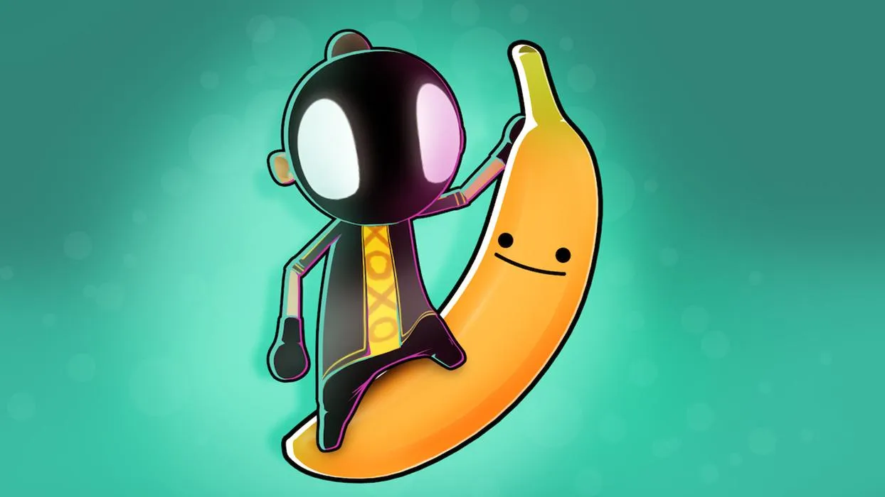
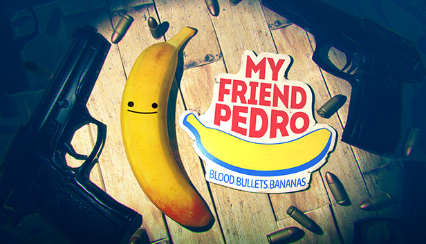

My Friend Pedro - відеогра в жанрі shoot'em up , розроблена DeadToast Entertainment і видана Devolver Digital . Гра була випущена для Microsoft Windows і Nintendo Switch 20 червня 2019 і для Xbox One 5 грудня 2019. На PlayStation 4 гра вийшла 2 квітня 2020 року. My Friend Pedro заснований на грі Adobe Flash - MFP: My Friend Pedro , яка була випущена Adult Swim Games [en] в 2014.
Гра починається з того, що безіменний головний герой у масці прокидається у м'ясній лавці, що належить людині на ім'я Мітч. Літаючий банан Педро повідомляє, що Мітч — торговець зброєю, і його потрібно усунути. Вбивши Мітча і тікаючи з бійні, головний герой прямує до Нульового округу, занедбаного суспільного проекту, в якому зараз проживає людина на ім'я Денні та його армія мисливців за головами. Під час зіткнення з Денні головний герой дізнається, що його сестра Офелія контролює Інтернет. Після перемоги над Денні гравець пробирається через каналізацію, щоб потрапити до Інтернету та протистояти Офелії. Коли вона переможена, з'ясовується, що головний герой систематично вбиває свою сім'ю: Мітч – його батько, Денні – його брат, а Офелія – його сестра. Педро каже гравцеві, що головний герой сам вирубав себе на тій бійні і стер пам'ять, щоб міг покінчити зі злочинним життям своєї сім'ї без наслідків.